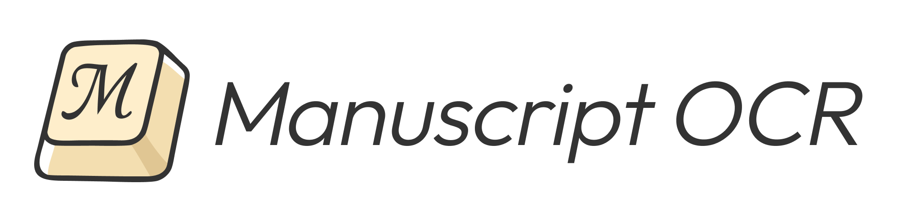

manuscript-ocr Documentation

manuscript-ocr is a Python library for OCR (Optical Character Recognition) of handwritten manuscripts and documents.

manuscript-ocr is a Python library for OCR (Optical Character Recognition) of handwritten manuscripts and documents.